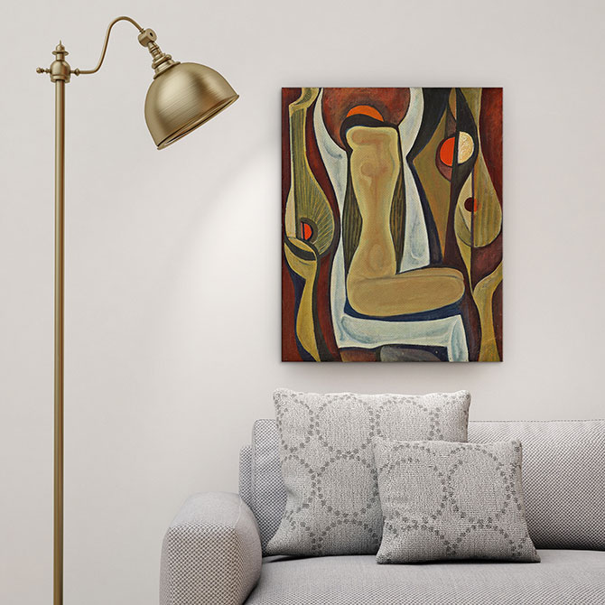
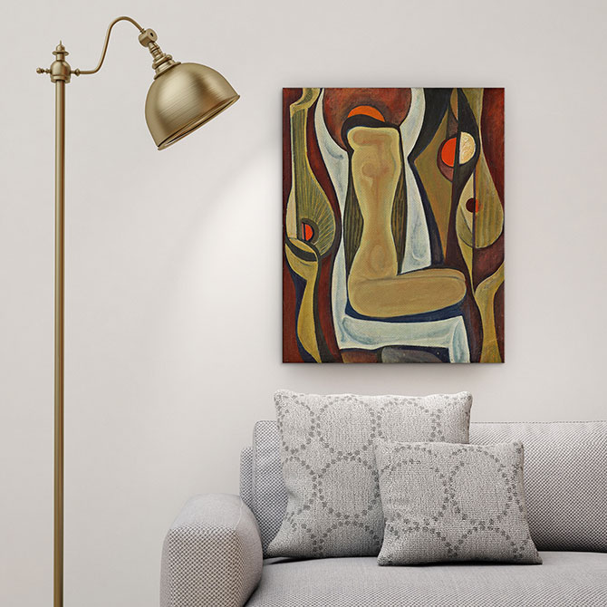

Abstract - usually about shape, line, value, color, and/or texture.
Art Nouveau - illusionistic but primarily flat, that are highly pattern driven, and that usually incorporate fluid, curving lines. Manga - Japanese comic book style developed in 19th Century Japan. Post-Impressionalism - drawings based on light (the preoccupation of the impressionists) but with more attention to geometric shapes. Realism - convincing representations of reality. Surrealism - dreamlike and sometimes startling works based on pure imagination.
Abstract, Art Nouveau, Manga, Post-Impressionalism, Realism and Surrealism work.

 
